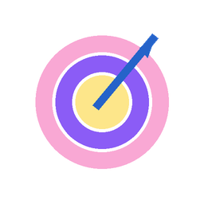
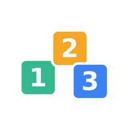
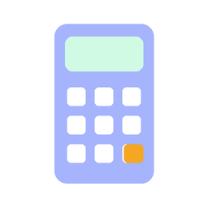
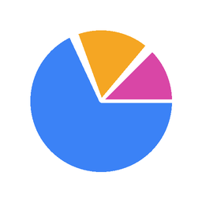

3 buah apel menunjukkan banyaknya apel.

Cari Konsep Cari materi, rumus, atau contoh. Latihan Interaktif Uji pemahamanmu. Refleksi Evaluasi dan catat perkembangan.Daftar Materi Pembelajaran

01 Bilangan Mengenal berbagai jenis bilangan.
02 Pecahan Konsep, bagian-bagian, dan jenis pecahan.
03 Desimal Bentuk desimal, operasi, dan penerapan. 04 Rasio & Perbandingan Hubungan dua besaran.
05 Operasi Bilangan Operasi hitung pada berbagai bilangan.
06 Penerapan Pemecahan masalah dalam kehidupan nyata.
EKSPLORASI
Peta Konsep
Jelajahi hubungan antara konsep-konsep matematika.
MATERI 01 KONSEP DASAR
Bilangan
Memahami bilangan berarti belajar membaca jumlah, membandingkan nilai, dan mengenali pola yang kita temui dalam kehidupan sehari-hari.
01
MENGENAL KONSEP
Pengertian Bilangan
Bilangan adalah konsep matematika yang digunakan untuk menyatakan jumlah, ukuran, urutan, atau nilai suatu objek.
Bilangan membantu kita menghitung banyak benda, membandingkan jumlah, mengukur sesuatu, dan menyatakan posisi.
−2°C menunjukkan suhu dua derajat di bawah nol.
1,5 meter menyatakan panjang suatu benda.
02
KLASIFIKASI
Jenis-Jenis Bilangan
Bilangan dapat dikelompokkan berdasarkan karakteristik dan bentuknya.
Bilangan Asli
Bilangan yang digunakan untuk membilang, dimulai dari 1.
1, 2, 3, 4, 5, …Bilangan Cacah
Bilangan asli yang dilengkapi dengan bilangan nol.
0, 1, 2, 3, 4, …Bilangan Bulat
Bilangan negatif, nol, dan bilangan positif tanpa bagian pecahan.
…, −3, −2, −1, 0, 1, 2, 3, …Bilangan Rasional
Bilangan yang dapat dinyatakan sebagai a/b, dengan a dan b bilangan bulat serta b ≠ 0.
1/2, −3, 0,75, 2, …Bilangan Irasional
Bilangan yang tidak dapat dinyatakan sebagai perbandingan dua bilangan bulat.
√2, π, √3, …Bilangan Real
Gabungan dari bilangan rasional dan bilangan irasional.
Semua titik pada garis bilangan
03
HUBUNGAN ANTARKONSEP
Hubungan Himpunan Bilangan
Setiap kelompok bilangan memiliki ciri dan anggota yang berbeda. Perhatikan diagram dan keterangan berikut untuk mengetahui dari mana setiap kelompok bilangan dimulai.
Bilangan Real (ℝ)
Gabungan bilangan rasional dan irasional
Bilangan Rasional (ℚ)
Bilangan Bulat (ℤ)
…, −½, −0,5, 0, ¼, ½, 1, …
Bilangan Cacah (W)
Bilangan Asli (ℕ)1, 2, 3, 4, …
Bilangan cacah dimulai dari 0
Bilangan Irasional√2, √3, π, …
Keterangan Himpunan Bilangan
Pilih salah satu keterangan untuk menyorot kelompoknya pada diagram.
Kesimpulan: ℕ ⊂ W ⊂ ℤ ⊂ ℚ ⊂ ℝ. Bilangan irasional juga termasuk ℝ, tetapi bukan bagian dari ℚ.
04
EKSPLORASI INTERAKTIF
Garis Bilangan
Geser penunjuk untuk melihat posisi bilangan negatif, nol, dan positif.
Bilangan yang dipilih0
Bilangan 0 berada di titik asal.
NegatifNolPositif
05
MATEMATIKA DI SEKITAR KITA
Penerapan Bilangan dalam Kehidupan Sehari-hari
Bilangan digunakan dalam berbagai aktivitas dan situasi nyata.
Berbelanja
Harga Rp15.000 dan uang Rp20.000 digunakan untuk menghitung kembalian Rp5.000.
Suhu
Suhu −3°C menunjukkan kondisi tiga derajat di bawah 0°C.
Waktu
Bilangan digunakan untuk menyatakan pukul, durasi, dan urutan kegiatan.
Pengukuran
Bilangan desimal seperti 1,5 meter digunakan untuk menyatakan panjang.
06
UJI PEMAHAMAN
Latihan Interaktif
Jawab empat pertanyaan berikut dan baca pembahasannya setelah memilih jawaban.
Soal 1 dari 4
Skor: 0
Memuat pertanyaan...
Pilih satu jawaban yang menurutmu benar.
MATERI 02
Pecahan
Mengenal konsep pecahan, bagian-bagiannya, dan berbagai jenis pecahan melalui representasi visual yang interaktif.
Mini Materi Pecahan
Kenali
3
4
3 → Pembilang
4 → Penyebut
Pecahan merupakan bilangan yang menyatakan bagian dari keseluruhan.
Representasi Visual
3
4
0,75
=
75%
3 dari 4 bagian sama besar telah diarsir.
Jenis-Jenis Pecahan
Pecahan dapat dinyatakan dalam beberapa bentuk. Berikut tiga jenis pecahan yang perlu kamu kenali.
Pecahan Biasa
34
- Pecahan murni
- Pecahan tidak murni
Contoh: 34, 54
Pecahan Campuran
1
12
- Terdiri dari bilangan bulat dan pecahan
Contoh: 1 12, 2 34
Pecahan Desimal
0,75
- Menggunakan tanda koma
Contoh: 0,5, 1,25
Pecahan
34
Pecahan menyatakan bagian dari suatu keseluruhan. Pembilang menunjukkan banyak bagian yang diperhatikan, sedangkan penyebut menunjukkan jumlah seluruh bagian yang sama besar.
Desimal
Desimal menggunakan tanda koma untuk memisahkan bagian bilangan bulat dan bagian pecahannya.
0,50,751,25
Persen
Persen berarti per seratus dan digunakan untuk menyatakan suatu nilai sebagai bagian dari 100.
25%50%75%
Rangkuman dan Cara Mengubah Bentuk Bilangan
Pecahan, desimal, dan persen dapat digunakan untuk menyatakan nilai yang sama.
Pecahan ke Desimal
Bagilah pembilang dengan penyebut.
Contoh: 12 = 1 ÷ 2 = 0,5
Pecahan ke Persen
Kalikan pecahan dengan 100%.
Contoh: 14 × 100% = 25%
Desimal ke Persen
Kalikan bilangan desimal dengan 100.
Contoh: 0,25 × 100% = 25%
Kesimpulan: 12 = 0,5 = 50%. Ketiganya menunjukkan nilai yang sama.
Konversi Interaktif
Masukkan nilai pada salah satu kolom untuk melihat bentuk yang setara.
%
Masukkan angka pada salah satu kolom untuk memulai konversi.
MATERI 04
Perbandingan Pecahan
Yuk, bandingkan dua pecahan dan temukan hubungan nilainya: lebih besar, lebih kecil, atau sama dengan.
Perbandingan Pecahan
12
?
23
Pilih tanda yang tepat untuk membandingkan kedua pecahan.
Bagaimana kamu mengetahuinya?
Pilih cara yang kamu gunakan untuk membandingkan kedua pecahan.
0 / 2.000 kata
HASIL PEMERIKSAAN
Pembahasan Jawaban
Langkah-langkah Penyelesaian
Kesimpulan:
MATERI 05
Operasi Pecahan
Pelajari cara menjumlahkan, mengurangkan, mengalikan, dan membagi pecahan melalui langkah-langkah sederhana.
34
12
Penjumlahan Pecahan
Penjumlahan dilakukan dengan menjumlahkan pembilang. Jika penyebut berbeda, samakan penyebut terlebih dahulu.
BAGIAN 1
A. Penjumlahan dengan Penyebut Sama
Jika dua pecahan memiliki penyebut sama, cukup jumlahkan pembilangnya. Penyebut tetap.
ac
+
bc
=
a + bc
Contoh:
15 + 25 = 35
Pembilang dijumlahkan, yaitu 1 + 2 = 3, sedangkan penyebut tetap 5.
BAGIAN 2
B. Penjumlahan dengan Penyebut Berbeda
Tentukan KPK penyebut untuk memperoleh penyebut yang sama, kemudian ubah menjadi pecahan senilai.
Contoh:
12 + 14 = 34
Langkah 1. Menentukan KPK.
KPK (2, 4) = 4
Langkah 2. Menyamakan penyebut.
12 = 24
Langkah 3. Menjumlahkan pembilang.
24 + 14 = 34
Jadi, hasil penjumlahan adalah 34.
AKTIVITAS 01
Ayo, Coba Kerjakan!
Lengkapi bagian yang kosong berdasarkan langkah penyelesaian.
SOAL
13 + 16 = ....
Langkah Penyelesaian
1
Menentukan KPK dari 3 dan 6.
KPK (3, 6) =
2
Mengubah pecahan pertama.
13 =
3
Menjumlahkan kedua pecahan.
26 + 16 =
4
Menyederhanakan hasil.
Hasil akhir =
Pengurangan Pecahan
Pengurangan dilakukan dengan mengurangkan pembilang. Jika penyebut berbeda, samakan terlebih dahulu.
BAGIAN 1
A. Pengurangan dengan Penyebut Sama
Kurangkan pembilangnya dan pertahankan penyebut tersebut.
ac
−
bc
=
a − bc
Contoh:
47 − 27 = 27
4 − 2 = 2, sedangkan penyebut tetap 7.
BAGIAN 2
B. Pengurangan dengan Penyebut Berbeda
Tentukan KPK penyebut, kemudian ubah kedua pecahan menjadi pecahan senilai.
Contoh:
34 − 12 = 14
Langkah 1. KPK (4, 2) = 4.
Langkah 2. 12 = 24.
Langkah 3. 34 − 24 = 14.
Jadi, hasil pengurangan adalah 14.
AKTIVITAS 02
Ayo, Coba Kerjakan!
Lengkapi langkah penyelesaian pengurangan berikut.
SOAL
56 − 13 = ....
Langkah Penyelesaian
1
Menentukan KPK dari 6 dan 3.
KPK (6, 3) =
2
Mengubah pecahan kedua.
13 =
3
Mengurangkan kedua pecahan.
56 − 26 =
4
Menyederhanakan hasil.
Hasil akhir =
Perkalian Pecahan
Kalikan pembilang dengan pembilang dan penyebut dengan penyebut.
Rumus Perkalian Pecahan
ab
×
cd
=
a × cb × d
Contoh:
23 × 35 = 615
Langkah 1. 2 × 3 = 6.
Langkah 2. 3 × 5 = 15.
Langkah 3. 615 = 25.
Jadi, hasil perkalian adalah 25.
AKTIVITAS 03
Ayo, Coba Kerjakan!
Lengkapi proses perkalian pecahan berikut.
SOAL
34 × 25 = ....
Langkah Penyelesaian
1
Mengalikan pembilang.
3 × 2 =
2
Mengalikan penyebut.
4 × 5 =
3
Membentuk pecahan.
Hasil =
4
Menyederhanakan hasil.
Hasil akhir =
Pembagian Pecahan
Pembagian pecahan diubah menjadi perkalian dengan membalik pecahan pembagi.
Rumus Pembagian Pecahan
ab
÷
cd
=
ab
×
dc
Contoh:
34 ÷ 25
Langkah 1. Membalik pecahan pembagi: 52.
Langkah 2. 34 × 52 = 158.
Langkah 3. 15 8 = 1 7 8 .
Jadi, hasil pembagian adalah 1 7 8 .
AKTIVITAS 04
Ayo, Coba Kerjakan!
Lengkapi langkah pembagian pecahan berikut.
SOAL
23 ÷ 45 = ....
Langkah Penyelesaian
1
Membalik pecahan pembagi.
45 menjadi
2
Mengubah menjadi perkalian.
23 × 54 =
3
Menyederhanakan hasil.
Hasil akhir =
MATERI 06
Penerapan
Jelajahi penggunaan pecahan saat berbagi makanan, persen ketika berbelanja, dan desimal dalam kegiatan mengukur.
🍕3/4
0,75
+−×÷
75% OFF
RpRpRp
✦
✧
SIMULASI 01
Makanan: Berbagi Pizza
Atur jumlah potongan pizza yang dimakan untuk memahami pecahan.
Pilih potongan pizza untuk menandai bagian yang dimakan.
dari 8 potong
0 potong8 potong
Pecahan pizza yang dimakan
3/8
3 dari 8 bagian pizza telah dimakan.
SIMULASI 02
Belanja: Menghitung Diskon
Ubah harga barang dan besar diskon untuk mengetahui harga yang harus dibayar.
Rp20.000Rp200.000
0%90%
Harga awal
Rp100.000
Potongan harga
Rp25.000
Harga setelah diskon
Rp75.000
Kamu menghemat Rp25.000 dari harga awal.
SIMULASI 03
Pengukuran: Panjang Benda
Atur panjang benda dan amati hubungan satuan sentimeter dengan meter.
Ilustrasi panjang benda mengikuti nilai pengukuran.
10 cm200 cm
Konversi ke meter
0,75 m
75 cm sama dengan 0,75 meter.
TANTANGAN MATEMATIKA
Saatnya Menguji Pemahamanmu!
Selesaikan soal berdasarkan situasi yang kamu temui dalam kehidupan sehari-hari.
SOAL 01 · PECAHAN
Ani memakan 3 dari 8 potong pizza yang sama besar. Pecahan yang menyatakan bagian pizza yang dimakan Ani adalah ....
SOAL 02 · PERSEN
Sebuah tas seharga Rp100.000 mendapat diskon 25%. Berapa harga tas setelah diskon?
SOAL 03 · DESIMAL
Panjang sebuah meja adalah 0,75 meter. Berapa panjang meja tersebut dalam sentimeter?
Skor: 0/3
Selesaikan semua soal untuk melihat hasilmu.
Uji Kemampuanmu!
Kamu sudah mempelajari konsep dan mencoba menerapkannya. Sekarang, buktikan pemahamanmu melalui 10 soal berikut.
Soal 1 dari 10
10%
1
2
3
4
5
6
7
8
9
10
Manakah bilangan berikut yang termasuk bilangan bulat?
Ani memakan 3 dari 8 potong pizza yang sama besar. Pecahan yang menyatakan bagian pizza yang dimakan Ani adalah ...
Pecahan 7/4 termasuk ke dalam jenis pecahan ...
Bentuk desimal dan persen dari pecahan 3/5 secara berurutan adalah ...
Tanda perbandingan yang tepat untuk 5/8 ... 2/3 adalah ...
Hasil dari 1/4 + 2/4 adalah ...
Hasil dari 5/6 − 1/3 adalah ...
Hasil dari 2/3 × 3/5 adalah ...
Hasil dari 3/4 ÷ 1/2 adalah ...
Ibu memiliki 2 liter susu. Untuk membuat satu adonan kue, diperlukan 3/4 liter susu. Berapa liter susu yang tersisa?
Latihan Selesai!
Terima kasih sudah menyelesaikan seluruh soal.
0
/ 100
0Jawaban benar
0Jawaban salah
Bagaimana perasaanmu setelah latihan?
Pilih refleksi yang paling sesuai dengan pengalaman belajarmu.
Kenali Proses Belajarmu!
Setiap proses belajar adalah kesempatan untuk berkembang. Yuk, evaluasi pemahaman, pengalaman, dan rencana belajarmu.
Refleksimu Berhasil Disimpan!
Terima kasih sudah mengevaluasi proses belajarmu.
TENTANG
Mengenal Math Connect
Ruang belajar untuk memahami matematika dengan lebih terarah dan bermakna.
MATH CONNECT
Belajar, Memahami, dan Menghubungkan Konsep
Math Connect merupakan media pembelajaran matematika yang membantu siswa memahami konsep secara bertahap melalui materi, peta konsep, penerapan dalam kehidupan sehari-hari, latihan interaktif, dan refleksi belajar.
Memahami
Membangun pemahaman konsep matematika secara bertahap.
Menghubungkan
Melihat hubungan antara satu konsep dengan konsep lainnya.
Menerapkan
Menggunakan pengetahuan matematika dalam situasi sehari-hari.